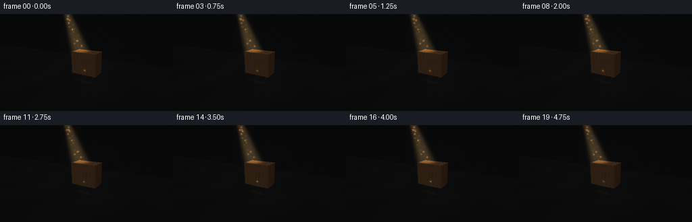
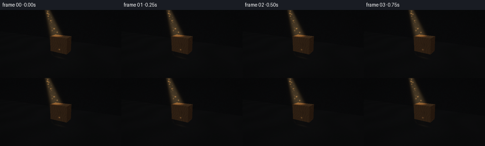
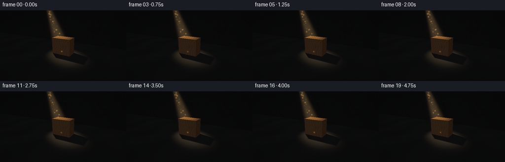
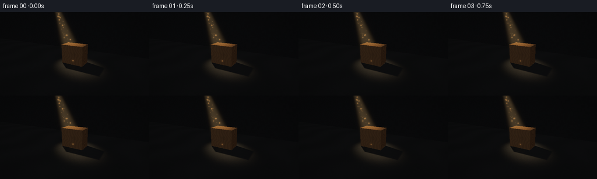

CODING AGENTS AS PIXEL WORLD MODELS
traex/GPT-5.6-Sol · phygen_041
点击播放 · 原生 RGB 像素
逐轮保存的候选
回放视频、检查图与代码变化。
每份候选均可单独播放。实际图片检查记录在下方工具轨迹中。
候选 01播放与检查图
点击播放 · 原生 RGB 像素


展开代码变化
--- 上一保存版本
+++ 本次保存版本
@@ -0,0 +1,259 @@
+from pathlib import Path
+import json
+import numpy as np
+from PIL import Image, ImageDraw, ImageFilter
+import artifact_io
+
+CASE_DIR = Path(__file__).resolve().parent
+SPEC = json.loads((CASE_DIR / "task_spec.json").read_text())
+OUT_W, OUT_H = int(SPEC["width"]), int(SPEC["height"])
+N_FRAMES = int(SPEC["frames"])
+SS = 2
+W, H = OUT_W * SS, OUT_H * SS
+
+# Camera: low enough to put the cast shadow prominently in the foreground.
+CAM = np.array([3.15, -5.75, 2.72], np.float64)
+LOOK = np.array([0.0, -0.02, 0.63], np.float64)
+UP0 = np.array([0.0, 0.0, 1.0])
+forward = LOOK - CAM
+forward /= np.linalg.norm(forward)
+right = np.cross(forward, UP0); right /= np.linalg.norm(right)
+up = np.cross(right, forward); up /= np.linalg.norm(up)
+
+fov = np.deg2rad(45.0)
+aspect = W / H
+xs = ((np.arange(W) + .5) / W * 2 - 1) * np.tan(fov/2) * aspect
+ys = (1 - (np.arange(H) + .5) / H * 2) * np.tan(fov/2)
+xx, yy = np.meshgrid(xs, ys)
+rays = forward[None,None,:] + xx[...,None]*right + yy[...,None]*up
+rays /= np.linalg.norm(rays, axis=2, keepdims=True)
+
+BMIN = np.array([-0.76, -0.43, 0.0])
+BMAX = np.array([ 0.76, 0.43, 1.28])
+LIGHT = np.array([-2.85, 1.42, 4.85])
+LIGHT_TARGET = np.array([-0.08, -0.13, 0.56])
+BEAM_AXIS = LIGHT_TARGET - LIGHT
+BEAM_AXIS /= np.linalg.norm(BEAM_AXIS)
+
+
+def hash_noise(x, y, z=0.0):
+ return np.mod(np.sin(x*127.1 + y*311.7 + z*74.7) * 43758.5453123, 1.0)
+
+
+def ray_box(orig, direc):
+ """Vectorized entry distance and entry normal for an axis-aligned box."""
+ inv = 1.0 / np.where(np.abs(direc) < 1e-9, np.sign(direc)*1e-9 + 1e-9, direc)
+ ta = (BMIN - orig) * inv
+ tb = (BMAX - orig) * inv
+ near_each = np.minimum(ta, tb)
+ far_each = np.maximum(ta, tb)
+ tn = np.max(near_each, axis=-1)
+ tf = np.min(far_each, axis=-1)
+ hit = (tf >= np.maximum(tn, 0.0))
+ axis_idx = np.argmax(near_each, axis=-1)
+ normal = np.zeros_like(direc)
+ for a in range(3):
+ mask = axis_idx == a
+ # entering the minimum plane when traveling in positive direction
+ normal[...,a][mask] = np.where(direc[...,a][mask] > 0, -1.0, 1.0)
+ return np.where(hit, tn, np.inf), normal, hit
+
+
+def segment_occluded(points, light_pos):
+ v = light_pos - points
+ dist = np.linalg.norm(v, axis=-1)
+ d = v / np.maximum(dist[...,None], 1e-8)
+ t, _, hit = ray_box(points + d*0.004, d)
+ return hit & (t > 0.004) & (t < dist - 0.008)
+
+
+def beam_profile(points):
+ rel = points - LIGHT
+ along = np.sum(rel * BEAM_AXIS, axis=-1)
+ radial_vec = rel - along[...,None]*BEAM_AXIS
+ radial = np.linalg.norm(radial_vec, axis=-1)
+ # Narrow luminous shaft widening gently toward the subject.
+ radius = 0.075 + 0.105*np.maximum(along, 0.0)
+ core = np.exp(-2.15 * (radial / np.maximum(radius, .03))**4)
+ return core * ((along > 0) & (along < 8.2)), along, radial, radius
+
+
+# ---- Primary visibility ----
+t_box, n_box, hit_box = ray_box(np.broadcast_to(CAM, rays.shape), rays)
+# Ground plane z=0
+t_floor = np.where(rays[...,2] < -1e-7, -CAM[2]/rays[...,2], np.inf)
+t_floor = np.where(t_floor > 0, t_floor, np.inf)
+# Back wall closes the dark room at y=3.35.
+t_wall = np.where(rays[...,1] > 1e-7, (3.35-CAM[1])/rays[...,1], np.inf)
+t_wall = np.where(t_wall > 0, t_wall, np.inf)
+
+t_surface = np.minimum(np.minimum(t_box, t_floor), t_wall)
+obj = np.where(t_box <= np.minimum(t_floor,t_wall), 2,
+ np.where(t_floor <= t_wall, 1, 3))
+points = CAM + rays*t_surface[...,None]
+normals = np.zeros_like(points)
+normals[obj==2] = n_box[obj==2]
+normals[obj==1] = np.array([0,0,1.0])
+normals[obj==3] = np.array([0,-1.0,0])
+
+# ---- Procedural materials in linear-ish RGB ----
+base = np.zeros((H,W,3), np.float64)
+# charcoal floor with subtle rough, large-scale mottling
+pf = points
+fine = hash_noise(np.floor(pf[...,0]*17), np.floor(pf[...,1]*17))
+large = 0.5 + 0.5*np.sin(pf[...,0]*2.0 + np.sin(pf[...,1]*1.3))
+floor_col = np.stack([.030 + .010*large, .033 + .010*large, .037 + .012*large], axis=-1)
+floor_col *= (.91 + .14*fine[...,None])
+base[obj==1] = floor_col[obj==1]
+# almost-black back wall; faint plaster mottling
+wn = hash_noise(np.floor(points[...,0]*10), np.floor(points[...,2]*10), 2)
+wall_col = np.stack([.017+.006*wn, .019+.006*wn, .023+.008*wn], axis=-1)
+base[obj==3] = wall_col[obj==3]
+
+# Wood on the three visible/possible faces.
+x,y,z = points[...,0], points[...,1], points[...,2]
+wood = np.zeros_like(base)
+front = (obj==2) & (normals[...,1] < -.5)
+sidep = (obj==2) & (normals[...,0] > .5)
+siden = (obj==2) & (normals[...,0] < -.5)
+top = (obj==2) & (normals[...,2] > .5)
+# Front face: horizontal walnut fibers, irregular growth lines, one restrained knot.
+grain_f = .5 + .5*np.sin(31*x + 3.0*np.sin(7.3*z) + 1.2*np.sin(5*x+11*z))
+fiber_f = .5 + .5*np.sin(112*x + 8*np.sin(3*z))
+knot_r = np.sqrt(((x-.20)*1.0)**2 + ((z-.70)*1.8)**2)
+knot = np.exp(-(knot_r/.20)**2) * (.5+.5*np.cos(47*knot_r))
+front_v = np.clip(.72 + .20*grain_f + .055*fiber_f - .25*knot, .40, 1.06)
+front_col = np.stack([.36*front_v, .145*front_v, .045*front_v], axis=-1)
+wood[front] = front_col[front]
+# Right/left end grain is darker and has compact arcing rings.
+rr = np.sqrt((y+.03)**2*1.6 + (z-.58)**2*.42)
+endgrain = .70 + .18*np.sin(38*rr + 2*np.sin(8*z)) + .05*np.sin(82*y)
+side_col = np.stack([.285*endgrain, .102*endgrain, .030*endgrain], axis=-1)
+wood[sidep|siden] = side_col[sidep|siden]
+# Top face catches the warm beam and clearly reads as wood.
+gr_top = .73 + .20*(.5+.5*np.sin(29*x + 3*np.sin(13*y))) + .06*np.sin(91*x)
+top_col = np.stack([.42*gr_top, .185*gr_top, .060*gr_top], axis=-1)
+wood[top] = top_col[top]
+# Edge darkening suggests tiny bevels and gives the block a crisp silhouette.
+dedge = np.minimum.reduce([np.abs(x-BMIN[0]), np.abs(BMAX[0]-x),
+ np.abs(y-BMIN[1]), np.abs(BMAX[1]-y),
+ np.abs(z-BMIN[2]), np.abs(BMAX[2]-z)])
+edgefac = .72 + .28*np.clip(dedge/.055,0,1)
+wood *= edgefac[...,None]
+base[obj==2] = wood[obj==2]
+
+# ---- Warm area-light shading and physically cast soft shadow ----
+toL = LIGHT - points
+dist2 = np.sum(toL*toL,axis=-1)
+ldir = toL/np.sqrt(np.maximum(dist2[...,None],1e-9))
+ndotl = np.maximum(0,np.sum(normals*ldir,axis=-1))
+spot, _, _, _ = beam_profile(points)
+# Five emitter samples, enough to soften the shadow without blurring its shape away.
+light_offsets = [np.array([0.,0.,0.]), np.array([.09,.02,.055]), np.array([-.09,-.02,-.055]),
+ np.array([.015,.09,-.035]), np.array([-.015,-.09,.035])]
+visibility = np.zeros((H,W),np.float64)
+for off in light_offsets:
+ visibility += (~segment_occluded(points + normals*.004, LIGHT+off)).astype(float)
+visibility /= len(light_offsets)
+# Suppress self-shadow numerical artifacts on directly facing wooden faces.
+visibility[obj==2] = np.maximum(visibility[obj==2], .92)
+direct = ndotl * spot * visibility * (4.35/(1.0 + .055*dist2))
+ambient = np.where(obj==2, .085, .035)
+# top/edge rim from a small amount of warm indirect bounce
+rim = np.where((obj==2)&(normals[...,2]>.5), .055, 0.0)
+light_color = np.array([1.00,.67,.32])
+linear = base * (ambient[...,None] + direct[...,None]*light_color + rim[...,None])
+# A dim cool fill preserves the block front shape while retaining darkness.
+linear[obj==2] += wood[obj==2] * np.array([.020,.025,.032])
+
+# ---- Volumetric light shaft by camera-ray integration ----
+# It is occluded by the block, so the visible ray and floor shadow agree.
+volume = np.zeros((H,W),np.float64)
+steps = 44
+# stratified samples up to the first opaque surface
+for k in range(steps):
+ frac = (k+.5)/steps
+ tv = t_surface * frac
+ q = CAM + rays*tv[...,None]
+ prof, along, radial, rad = beam_profile(q)
+ occ = segment_occluded(q, LIGHT)
+ # soft distance fade, slight heterogeneous haze, and a forward-scattering bias
+ haze = .82 + .18*hash_noise(np.floor(q[...,0]*5), np.floor(q[...,1]*5), np.floor(q[...,2]*5))
+ volume += prof * (~occ) * haze * (1/(1+.025*along*along)) * t_surface/steps
+volume *= .088
+# warm airborne light; retain detail by compressing emission.
+beam_emission = (1-np.exp(-volume))[...,None] * np.array([1.00,.61,.24]) * 1.34
+linear += beam_emission
+
+# Vignette and filmic conversion.
+uvx = xx/(np.tan(fov/2)*aspect)
+uvy = yy/np.tan(fov/2)
+vignette = np.clip(1.0 - .22*(uvx*uvx+uvy*uvy), .68, 1.0)
+linear *= vignette[...,None]
+linear = np.maximum(linear,0)
+# modest bloom from the shaft and bright wood edge
+beam8 = np.uint8(np.clip(beam_emission**(1/2.2)*255,0,255))
+bloom = np.asarray(Image.fromarray(beam8).filter(ImageFilter.GaussianBlur(radius=7*SS))).astype(float)/255
+linear += (bloom**2.2)*.15
+
+# Project world point to supersampled pixel coordinates and view distance.
+def project(p):
+ rel = p-CAM
+ depth = np.dot(rel,forward)
+ if depth <= .01: return None
+ nx = np.dot(rel,right)/(depth*np.tan(fov/2)*aspect)
+ ny = np.dot(rel,up)/(depth*np.tan(fov/2))
+ return (nx+1)*.5*W, (1-ny)*.5*H, depth
+
+# Deterministic floating dust distributed inside the beam.
+rng = np.random.default_rng(41703)
+# orthonormal beam basis
+b1 = np.cross(BEAM_AXIS, np.array([0.,0.,1.]))
+b1 /= np.linalg.norm(b1)
+b2 = np.cross(BEAM_AXIS,b1)
+dust = []
+for _ in range(58):
+ al = rng.uniform(.75,5.9)
+ rad = (.06+.08*al)*np.sqrt(rng.uniform())*.72
+ ang = rng.uniform(0,2*np.pi)
+ pos = LIGHT + BEAM_AXIS*al + b1*rad*np.cos(ang)+b2*rad*np.sin(ang)
+ dust.append((pos, rng.uniform(.35,1.0), rng.uniform(0,2*np.pi), rng.uniform(-1,1)))
+
+frames=[]
+for fi in range(N_FRAMES):
+ phase = 2*np.pi*fi/N_FRAMES
+ # extremely subtle source breathing prevents a frozen video without distracting motion.
+ flicker = 0.985 + .015*np.sin(phase*.73+.35) + .006*np.sin(phase*2.1)
+ frame_lin = linear.copy()
+ # Only emissive/directly lit pixels participate meaningfully in flicker.
+ frame_lin += beam_emission*(flicker-1.0)
+ # filmic Reinhard with deep black retention
+ mapped = frame_lin/(1+frame_lin)
+ rgb = np.uint8(np.clip(mapped**(1/2.18)*255,0,255))
+ im = Image.fromarray(rgb,"RGB")
+ # Draw drifting dust on transparent light and halo layers.
+ dust_layer = Image.new("RGB",(W,H),(0,0,0))
+ dd = ImageDraw.Draw(dust_layer)
+ for pos0, strength, ph, drift in dust:
+ pos = pos0 + b1*(.022*np.sin(phase+ph)) + b2*(.013*np.cos(phase*.8+ph))
+ pr = project(pos)
+ if pr is None: continue
+ px,py,dep = pr
+ ix,iy=int(px),int(py)
+ if not (2<=ix<W-2 and 2<=iy<H-2): continue
+ # particle must sit in front of the visible opaque surface
+ if dep > t_surface[iy,ix]*.99: continue
+ twinkle = strength*(.68+.32*np.sin(phase*1.25+ph)**2)
+ c=int(66*twinkle)
+ r=1 if strength<.78 else 2
+ dd.ellipse((px-r,py-r,px+r,py+r),fill=(c,int(c*.69),int(c*.34)))
+ halo = dust_layer.filter(ImageFilter.GaussianBlur(radius=1.35*SS))
+ arr = np.asarray(im).astype(np.int16)+np.asarray(halo).astype(np.int16)+np.asarray(dust_layer).astype(np.int16)
+ arr=np.uint8(np.clip(arr,0,255))
+ # Downsample for clean anti-aliased geometry and fine grain.
+ out=Image.fromarray(arr).resize((OUT_W,OUT_H),Image.Resampling.LANCZOS)
+ frames.append(np.asarray(out,dtype=np.uint8))
+
+frames=np.stack(frames,axis=0)
+artifact_io.save(frames,CASE_DIR)
+print(f"saved {frames.shape} {frames.dtype}; RGB range {frames.min()}..{frames.max()}")
候选 02播放与检查图
点击播放 · 原生 RGB 像素


展开代码变化
--- 上一保存版本
+++ 本次保存版本
@@ -147,7 +147,13 @@
dist2 = np.sum(toL*toL,axis=-1)
ldir = toL/np.sqrt(np.maximum(dist2[...,None],1e-9))
ndotl = np.maximum(0,np.sum(normals*ldir,axis=-1))
-spot, _, _, _ = beam_profile(points)
+spot, spot_along, spot_radial, spot_radius = beam_profile(points)
+# The optical spotlight footprint is broader than the dense visible core of
+# the dusty shaft. This lights the floor surrounding the occluded region,
+# allowing the block's projected shadow to read in the lower foreground.
+surface_radius = .15 + .175*np.maximum(spot_along, 0.0)
+surface_spot = np.exp(-1.38*(spot_radial/np.maximum(surface_radius,.04))**4)
+surface_spot *= ((spot_along > 0) & (spot_along < 8.2))
# Five emitter samples, enough to soften the shadow without blurring its shape away.
light_offsets = [np.array([0.,0.,0.]), np.array([.09,.02,.055]), np.array([-.09,-.02,-.055]),
np.array([.015,.09,-.035]), np.array([-.015,-.09,.035])]
@@ -157,7 +163,7 @@
visibility /= len(light_offsets)
# Suppress self-shadow numerical artifacts on directly facing wooden faces.
visibility[obj==2] = np.maximum(visibility[obj==2], .92)
-direct = ndotl * spot * visibility * (4.35/(1.0 + .055*dist2))
+direct = ndotl * surface_spot * visibility * (4.75/(1.0 + .055*dist2))
ambient = np.where(obj==2, .085, .035)
# top/edge rim from a small amount of warm indirect bounce
rim = np.where((obj==2)&(normals[...,2]>.5), .055, 0.0)
可观测工具轨迹
实际执行的命令与返回图片。
命令 1exit 0
/bin/bash -lc "cat prompt.txt && printf '\\n--- GENERATION_RULES.md ---\\n' && cat GENERATION_RULES.md"
命令 2exit 0
/bin/bash -lc "cat task_spec.json && printf '\\n--- FILES ---\\n' && find . -maxdepth 2 -type f -printf '%p\\n' | sort"
命令 3exit 0
/bin/bash -lc "which ffmpeg; which blender; which python3; python3 - <<'PY'
try:
import cv2; print('cv2', cv2.__version__)
except Exception as e: print('no cv2',e)
try:
from PIL import Image; print('PIL ok')
except Exception as e: print('no PIL',e)
try:
import numpy as np; print('numpy',np.__version__)
except Exception as e: print('no numpy',e)
PY"命令 4exit 0
/bin/bash -lc 'cat artifact_io.py'
命令 5exit 0
/bin/bash -lc "cat > generate.py <<'PY'
from pathlib import Path
import json
import numpy as np
from PIL import Image, ImageDraw, ImageFilter
import artifact_io
CASE_DIR = Path(__file__).resolve().parent
SPEC = json.loads((CASE_DIR / \"task_spec.json\").read_text())
OUT_W, OUT_H = int(SPEC[\"width\"]), int(SPEC[\"height\"])
N_FRAMES = int(SPEC[\"frames\"])
SS = 2
W, H = OUT_W * SS, OUT_H * SS
# Camera: low enough to put the cast shadow prominently in the foreground.
CAM = np.array([3.15, -5.75, 2.72], np.float64)
LOOK = np.array([0.0, -0.02, 0.63], np.float64)
UP0 = np.array([0.0, 0.0, 1.0])
forward = LOOK - CAM
forward /= np.linalg.norm(forward)
right = np.cross(forward, UP0); right /= np.linalg.norm(right)
up = np.cross(right, forward); up /= np.linalg.norm(up)
fov = np.deg2rad(45.0)
aspect = W / H
xs = ((np.arange(W) + .5) / W * 2 - 1) * np.tan(fov/2) * aspect
ys = (1 - (np.arange(H) + .5) / H * 2) * np.tan(fov/2)
xx, yy = np.meshgrid(xs, ys)
rays = forward[None,None,:] + xx[...,None]*right + yy[...,None]*up
rays /= np.linalg.norm(rays, axis=2, keepdims=True)
BMIN = np.array([-0.76, -0.43, 0.0])
BMAX = np.array([ 0.76, 0.43, 1.28])
LIGHT = np.array([-2.85, 1.42, 4.85])
LIGHT_TARGET = np.array([-0.08, -0.13, 0.56])
BEAM_AXIS = LIGHT_TARGET - LIGHT
BEAM_AXIS /= np.linalg.norm(BEAM_AXIS)
def hash_noise(x, y, z=0.0):
return np.mod(np.sin(x*127.1 + y*311.7 + z*74.7) * 43758.5453123, 1.0)
def ray_box(orig, direc):
\"\"\"Vectorized entry distance and entry normal for an axis-aligned box.\"\"\"
inv = 1.0 / np.where(np.abs(direc) < 1e-9, np.sign(direc)*1e-9 + 1e-9, direc)
ta = (BMIN - orig) * inv
tb = (BMAX - orig) * inv
near_each = np.minimum(ta, tb)
far_each = np.maximum(ta, tb)
tn = np.max(near_each, axis=-1)
tf = np.min(far_each, axis=-1)
hit = (tf >= np.maximum(tn, 0.0))
axis_idx = np.argmax(near_each, axis=-1)
normal = np.zeros_like(direc)
for a in range(3):
mask = axis_idx == a
# entering the minimum plane when traveling in positive direction
normal[...,a][mask] = np.where(direc[...,a][mask] > 0, -1.0, 1.0)
return np.where(hit, tn, np.inf), normal, hit
def segment_occluded(points, light_pos):
v = light_pos - points
dist = np.linalg.norm(v, axis=-1)
d = v / np.maximum(dist[...,None], 1e-8)
t, _, hit = ray_box(points + d*0.004, d)
return hit & (t > 0.004) & (t < dist - 0.008)
def beam_profile(points):
rel = points - LIGHT
along = np.sum(rel * BEAM_AXIS, axis=-1)
radial_vec = rel - along[...,None]*BEAM_AXIS
radial = np.linalg.norm(radial_vec, axis=-1)
# Narrow luminous shaft widening gently toward the subject.
radius = 0.075 + 0.105*np.maximum(along, 0.0)
core = np.exp(-2.15 * (radial / np.maximum(radius, .03))**4)
return core * ((along > 0) & (along < 8.2)), along, radial, radius
# ---- Primary visibility ----
t_box, n_box, hit_box = ray_box(np.broadcast_to(CAM, rays.shape), rays)
# Ground plane z=0
t_floor = np.where(rays[...,2] < -1e-7, -CAM[2]/rays[...,2], np.inf)
t_floor = np.where(t_floor > 0, t_floor, np.inf)
# Back wall closes the dark room at y=3.35.
t_wall = np.where(rays[...,1] > 1e-7, (3.35-CAM[1])/rays[...,1], np.inf)
t_wall = np.where(t_wall > 0, t_wall, np.inf)
t_surface = np.minimum(np.minimum(t_box, t_floor), t_wall)
obj = np.where(t_box <= np.minimum(t_floor,t_wall), 2,
np.where(t_floor <= t_wall, 1, 3))
points = CAM + rays*t_surface[...,None]
normals = np.zeros_like(points)
normals[obj==2] = n_box[obj==2]
normals[obj==1] = np.array([0,0,1.0])
normals[obj==3] = np.array([0,-1.0,0])
# ---- Procedural materials in linear-ish RGB ----
base = np.zeros((H,W,3), np.float64)
# charcoal floor with subtle rough, large-scale mottling
pf = points
fine = hash_noise(np.floor(pf[...,0]*17), np.floor(pf[...,1]*17))
large = 0.5 + 0.5*np.sin(pf[...,0]*2.0 + np.sin(pf[...,1]*1.3))
floor_col = np.stack([.030 + .010*large, .033 + .010*large, .037 + .012*large], axis=-1)
floor_col *= (.91 + .14*fine[...,None])
base[obj==1] = floor_col[obj==1]
# almost-black back wall; faint plaster mottling
wn = hash_noise(np.floor(points[...,0]*10), np.floor(points[...,2]*10), 2)
wall_col = np.stack([.017+.006*wn, .019+.006*wn, .023+.008*wn], axis=-1)
base[obj==3] = wall_col[obj==3]
# Wood on the three visible/possible faces.
x,y,z = points[...,0], points[...,1], points[...,2]
wood = np.zeros_like(base)
front = (obj==2) & (normals[...,1] < -.5)
sidep = (obj==2) & (normals[...,0] > .5)
siden = (obj==2) & (normals[...,0] < -.5)
top = (obj==2) & (normals[...,2] > .5)
# Front face: horizontal walnut fibers, irregular growth lines, one restrained knot.
grain_f = .5 + .5*np.sin(31*x + 3.0*np.sin(7.3*z) + 1.2*np.sin(5*x+11*z))
fiber_f = .5 + .5*np.sin(112*x + 8*np.sin(3*z))
knot_r = np.sqrt(((x-.20)*1.0)**2 + ((z-.70)*1.8)**2)
knot = np.exp(-(knot_r/.20)**2) * (.5+.5*np.cos(47*knot_r))
front_v = np.clip(.72 + .20*grain_f + .055*fiber_f - .25*knot, .40, 1.06)
front_col = np.stack([.36*front_v, .145*front_v, .045*front_v], axis=-1)
wood[front] = front_col[front]
# Right/left end grain is darker and has compact arcing rings.
rr = np.sqrt((y+.03)**2*1.6 + (z-.58)**2*.42)
endgrain = .70 + .18*np.sin(38*rr + 2*np.sin(8*z)) + .05*np.sin(82*y)
side_col = np.stack([.285*endgrain, .102*endgrain, .030*endgrain], axis=-1)
wood[sidep|siden] = side_col[sidep|siden]
# Top face catches the warm beam and clearly reads as wood.
gr_top = .73 + .20*(.5+.5*np.sin(29*x + 3*np.sin(13*y))) + .06*np.sin(91*x)
top_col = np.stack([.42*gr_top, .185*gr_top, .060*gr_top], axis=-1)
wood[top] = top_col[top]
# Edge darkening suggests tiny bevels and gives the block a crisp silhouette.
dedge = np.minimum.reduce([np.abs(x-BMIN[0]), np.abs(BMAX[0]-x),
np.abs(y-BMIN[1]), np.abs(BMAX[1]-y),
np.abs(z-BMIN[2]), np.abs(BMAX[2]-z)])
edgefac = .72 + .28*np.clip(dedge/.055,0,1)
wood *= edgefac[...,None]
base[obj==2] = wood[obj==2]
# ---- Warm area-light shading and physically cast soft shadow ----
toL = LIGHT - points
dist2 = np.sum(toL*toL,axis=-1)
ldir = toL/np.sqrt(np.maximum(dist2[...,None],1e-9))
ndotl = np.maximum(0,np.sum(normals*ldir,axis=-1))
spot, _, _, _ = beam_profile(points)
# Five emitter samples, enough to soften the shadow without blurring its shape away.
light_offsets = [np.array([0.,0.,0.]), np.array([.09,.02,.055]), np.array([-.09,-.02,-.055]),
np.array([.015,.09,-.035]), np.array([-.015,-.09,.035])]
visibility = np.zeros((H,W),np.float64)
for off in light_offsets:
visibility += (~segment_occluded(points + normals*.004, LIGHT+off)).astype(float)
visibility /= len(light_offsets)
# Suppress self-shadow numerical artifacts on directly facing wooden faces.
visibility[obj==2] = np.maximum(visibility[obj==2], .92)
direct = ndotl * spot * visibility * (4.35/(1.0 + .055*dist2))
ambient = np.where(obj==2, .085, .035)
# top/edge rim from a small amount of warm indirect bounce
rim = np.where((obj==2)&(normals[...,2]>.5), .055, 0.0)
light_color = np.array([1.00,.67,.32])
linear = base * (ambient[...,None] + direct[...,None]*light_color + rim[...,None])
# A dim cool fill preserves the block front shape while retaining darkness.
linear[obj==2] += wood[obj==2] * np.array([.020,.025,.032])
# ---- Volumetric light shaft by camera-ray integration ----
# It is occluded by the block, so the visible ray and floor shadow agree.
volume = np.zeros((H,W),np.float64)
steps = 44
# stratified samples up to the first opaque surface
for k in range(steps):
frac = (k+.5)/steps
tv = t_surface * frac
q = CAM + rays*tv[...,None]
prof, along, radial, rad = beam_profile(q)
occ = segment_occluded(q, LIGHT)
# soft distance fade, slight heterogeneous haze, and a forward-scattering bias
haze = .82 + .18*hash_noise(np.floor(q[...,0]*5), np.floor(q[...,1]*5), np.floor(q[...,2]*5))
volume += prof * (~occ) * haze * (1/(1+.025*along*along)) * t_surface/steps
volume *= .088
# warm airborne light; retain detail by compressing emission.
beam_emission = (1-np.exp(-volume))[...,None] * np.array([1.00,.61,.24]) * 1.34
linear += beam_emission
# Vignette and filmic conversion.
uvx = xx/(np.tan(fov/2)*aspect)
uvy = yy/np.tan(fov/2)
vignette = np.clip(1.0 - .22*(uvx*uvx+uvy*uvy), .68, 1.0)
linear *= vignette[...,None]
linear = np.maximum(linear,0)
# modest bloom from the shaft and bright wood edge
beam8 = np.uint8(np.clip(beam_emission**(1/2.2)*255,0,255))
bloom = np.asarray(Image.fromarray(beam8).filter(ImageFilter.GaussianBlur(radius=7*SS))).astype(float)/255
linear += (bloom**2.2)*.15
# Project world point to supersampled pixel coordinates and view distance.
def project(p):
rel = p-CAM
depth = np.dot(rel,forward)
if depth <= .01: return None
nx = np.dot(rel,right)/(depth*np.tan(fov/2)*aspect)
ny = np.dot(rel,up)/(depth*np.tan(fov/2))
return (nx+1)*.5*W, (1-ny)*.5*H, depth
# Deterministic floating dust distributed inside the beam.
rng = np.random.default_rng(41703)
# orthonormal beam basis
b1 = np.cross(BEAM_AXIS, np.array([0.,0.,1.]))
b1 /= np.linalg.norm(b1)
b2 = np.cross(BEAM_AXIS,b1)
dust = []
for _ in range(58):
al = rng.uniform(.75,5.9)
rad = (.06+.08*al)*np.sqrt(rng.uniform())*.72
ang = rng.uniform(0,2*np.pi)
pos = LIGHT + BEAM_AXIS*al + b1*rad*np.cos(ang)+b2*rad*np.sin(ang)
dust.append((pos, rng.uniform(.35,1.0), rng.uniform(0,2*np.pi), rng.uniform(-1,1)))
frames=[]
for fi in range(N_FRAMES):
phase = 2*np.pi*fi/N_FRAMES
# extremely subtle source breathing prevents a frozen video without distracting motion.
flicker = 0.985 + .015*np.sin(phase*.73+.35) + .006*np.sin(phase*2.1)
frame_lin = linear.copy()
# Only emissive/directly lit pixels participate meaningfully in flicker.
frame_lin += beam_emission*(flicker-1.0)
# filmic Reinhard with deep black retention
mapped = frame_lin/(1+frame_lin)
rgb = np.uint8(np.clip(mapped**(1/2.18)*255,0,255))
im = Image.fromarray(rgb,\"RGB\")
# Draw drifting dust on transparent light and halo layers.
dust_layer = Image.new(\"RGB\",(W,H),(0,0,0))
dd = ImageDraw.Draw(dust_layer)
for pos0, strength, ph, drift in dust:
pos = pos0 + b1*(.022*np.sin(phase+ph)) + b2*(.013*np.cos(phase*.8+ph))
pr = project(pos)
if pr is None: continue
px,py,dep = pr
ix,iy=int(px),int(py)
if not (2<=ix<W-2 and 2<=iy<H-2): continue
# particle must sit in front of the visible opaque surface
if dep > t_surface[iy,ix]*.99: continue
twinkle = strength*(.68+.32*np.sin(phase*1.25+ph)**2)
c=int(66*twinkle)
r=1 if strength<.78 else 2
dd.ellipse((px-r,py-r,px+r,py+r),fill=(c,int(c*.69),int(c*.34)))
halo = dust_layer.filter(ImageFilter.GaussianBlur(radius=1.35*SS))
arr = np.asarray(im).astype(np.int16)+np.asarray(halo).astype(np.int16)+np.asarray(dust_layer).astype(np.int16)
arr=np.uint8(np.clip(arr,0,255))
# Downsample for clean anti-aliased geometry and fine grain.
out=Image.fromarray(arr).resize((OUT_W,OUT_H),Image.Resampling.LANCZOS)
frames.append(np.asarray(out,dtype=np.uint8))
frames=np.stack(frames,axis=0)
artifact_io.save(frames,CASE_DIR)
print(f\"saved {frames.shape} {frames.dtype}; RGB range {frames.min()}..{frames.max()}\")
PY
python3 generate.py"命令 6exit 0
/bin/bash -lc "python3 generate.py && python3 - <<'PY'
from pathlib import Path
import numpy as np
from PIL import Image
# Contract checks plus basic temporal/spatial metrics.
p=np.load('pixels.npz')['pixels']
assert p.shape==(144,256,20) and p.dtype==np.uint32
fs=np.stack([np.asarray(Image.open(f'frames/{i:02d}.png').convert('RGB')) for i in range(20)])
assert fs.shape==(20,144,256,3) and fs.dtype==np.uint8
print('frame mean luma:', np.round(fs.mean((1,2,3)),2).tolist())
print('adjacent absolute delta:', np.round(np.abs(np.diff(fs.astype(float),axis=0)).mean((1,2,3)),3).tolist())
print('artifacts:', [(x.name,x.stat().st_size) for x in map(Path,['pixels.npz','index.html','inspection.png'])])
PY"视觉工具实际返回图片 1

视觉工具实际返回图片 2

保存候选 2 份；完成命令 6 次；可验证图片返回 2 张。原始 API 响应与完整日志保留在本地。